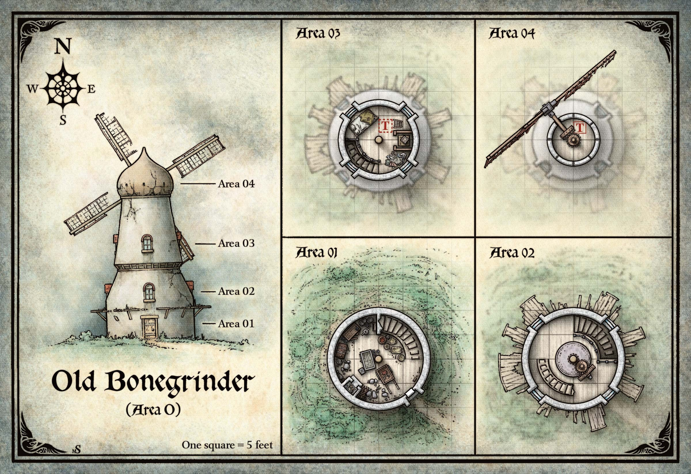

한때 발라키(Vallaki)에 곡물을 공급하던 이 비뚤어진 풍차는 이제 세 명의 밤 마녀(Night Hag)의 보금자리이다: 모르간사(Morgantha)와 그녀의 사악한 딸들, 벨라 선베인(Bella Sunbane)과 오팔리아 웜위글(Offalia Wormwiggle). 마녀들은 바로비아(Barovia)에 갇혀 있지만 이곳을 좋아한다. 변신 행동(Change Shape)을 사용하여 바로비아 여인 — 촌스러운 어머니와 못생긴 두 딸 — 의 모습으로 위장한 마녀들은 아이들을 납치하여 잡아먹고, 풍차의 맷돌로 작은 뼈를 분쇄하여 가루로 만든다. 이 가루는 마녀들의 꿈 과자(Dream Pastry)의 핵심 재료이며, 스트라드(Strahd)의 영지에서 벗어나길 절박하게 원하는 바로비아 성인들에게 제공된다.
무고한 자의 뼈로 만든 마녀의 꿈 과자는 바로비아인이 황홀경에 빠지게 하며, 그 안에서 기쁨 가득한 천국 같은 장소로 탈출할 수 있다. 성인들이 더 이상 꿈 과자를 살 여유가 없으면, 마녀들은 과자와 자녀를 교환할 것을 제안한다. 이로써 성인들의 이기심을 먹이 삼으며 동시에 더 많은 과자를 만들 재료를 확보한다. 이것이 마녀들이 스트라드의 영지에 타락을 뿌리는 방식이며, 아이들을 강제로 빼앗지 않는 이유이다. 마녀들은 영혼이 있는 아이에게만 관심이 있다. 각 아이를 바늘로 찌르고, 아이가 울면 그것이 영혼이 있다는 징표이다.
꿈은 산 자를 위한 것이다.
— 스트라드 폰 자로비치(Strahd von Zarovich)
풍차의 석벽은 쉽게 올라갈 수 있다. 나무 바닥이 각 층을 구분한다. 마녀들이 암시야를 가지고 있어 내부에 조명은 없다.
구 스발리치 가도(Old Svalich Road)가 이곳에서 발리녹 산맥(Balinok Mountains)을 관통하는 구불구불한 길에서 안개 가득한 계곡으로 내려가며 산허리를 따라가는 느긋한 오솔길로 바뀐다. 계곡 한가운데, 크고 어두운 산 호수 기슭 가까이에 성벽으로 둘러싸인 마을이 보이며, 수면은 어둡고 고요하다. 길의 한 갈래가 서쪽 곶으로 이어지며, 그 위에 휘어진 나무 날개가 벗겨진 노후한 석조 풍차가 앉아 있다.
풍차를 더 가까이 살피면 몇 가지 세부 사항이 드러난다:
양파 모양 지붕의 건물이 앞으로, 한쪽으로 기울어져 있다 — 마치 폭풍우 치는 잿빛 하늘에서 돌아서려는 듯하다. 회색 벽돌 벽과 위층의 때 낀 창문이 보인다. 허름한 출입구 위로, 낡은 나무 발판이 풍차를 둘러싸고 있다. 문 위 나무 들보에 까마귀 한 마리가 앉아 있다. 이리저리 뛰며 꽥꽥 울어대는데, 뭔가 초조한 듯하다.
DC 12 지혜(통찰) 판정에 성공한 캐릭터는 까마귀가 파티에게 경고하려 한다고 감지한다. 메시지를 전달한 뒤, 까마귀는 아래 계곡의 마을 발라키(제5장 참조)를 향해 날아간다.
풍차 너머에는 숲이 있다. 풍차 언덕 꼭대기에 올라서면, 캐릭터들은 숲 가장자리에 네 개의 낮은 거석이 원을 이루고 있는 것을 볼 수 있다. 돌 위에서 까마귀들이 선회하는 것이 보이며, 이 거석은 이 장의 끝에 설명되어 있다.
아래 구역들은 늙은 뼈 분쇄기 지도의 표시에 해당한다.

1층은 임시 주방으로 개조되었지만 방은 불결하다. 바구니와 낡은 식기가 어디에나 쌓여 있다. 어수선함에 더해 행상인의 수레, 닭장, 무거운 나무 궤, 꽃이 그려진 예쁜 나무 캐비닛이 있다. 닭 울음소리에 더해 두꺼비 울음소리가 들린다.
과자의 달콤한 냄새가 코를 찌르는 악취와 끔찍하게 섞인다. 그 지독한 냄새는 방 한가운데 세워진 열린 통에서 나온다.
한쪽 벽의 벽돌 오븐에서 온기가 나오고, 맞은편 벽을 따라 허물어지는 계단이 올라간다. 더 높은 곳 어딘가에서 비명과 깔깔거림이 들려 낡은 풍차를 흔든다.
천장 높이는 8피트이다. 캐릭터들이 방을 탐색하면, 다음을 읽어준다:
작은 인간 뼈가 판석 바닥에 흩어져 있다.
오븐에서 꿈 과자 열두 개가 구워지고 있다. 모르간사는 10분마다 확인한다. 계단은 구역 O2로 올라간다.
통에는 번들거리는 녹흑색 악마 독액(Demon Ichor)이 담겨 있다. 모르간사는 이 통을 투시(Scrying) 주문의 매개체로 사용할 수 있다. 또한 행동으로 통을 세 번 두드려 드레치(Dretch)를 소환할 수 있다. 악마는 모르간사의 턴 끝에 통에서 기어 나와 1시간 동안 밤 마녀의 명령에 복종하며, 이후 독액 웅덩이로 녹아든다. 모르간사는 독액이 바닥나기 전까지 이 방식으로 최대 아홉 마리의 드레치를 소환할 수 있다.
모르간사의 캐비닛에는 허브와 제빵 재료가 든 나무 그릇들이 있으며, 밀가루, 설탕, 뼈 가루가 든 호리병 여러 개가 포함된다. 캐비닛 문 안쪽에 머리카락 타래 열두 개가 걸려 있다. 각종 혼합물 사이에 비약이 든 작은 용기 세 개가 있으며 라벨이 붙어 있다. 첫 번째 비약, "젊음(Youth)"이라 표시된 것은 금빛 시럽으로, 마셔진 자를 마법적으로 24시간 동안 더 젊고 매력적으로 보이게 한다. 두 번째 비약, "웃음(Laughter)"이라 표시된 것은 비마법적 붉은 차로, 마신 자를 깔깔거림 열병(Cackle Fever)에 감염시킨다 (던전 마스터 가이드 제8장 "질병" 참조). 세 번째 비약, "어머니의 젖(Mother's Milk)"이라 표시된 녹빛 유백색 액체는 사실 창백한 팅크(Pale Tincture) 1회분이다 (던전 마스터 가이드 제8장 "독" 참조).
닭장에는 닭 세 마리, 수탉 한 마리, 그리고 낳은 달걀 몇 개가 있다.
나무 궤에는 뚜껑에 작은 구멍이 뚫려 있으며, 꽥꽥 우는 두꺼비 100마리가 들어 있다. 뚜껑을 열면 여러 마리가 탈출하지만 무해하다.
다른 곳으로 유인되지 않았다면, 모르간사가 이곳에 있다. 이곳은 그녀가 꿈 과자 가루를 만들기 위해 아이들의 뼈를 분쇄하는 곳이다.
삶은 사과처럼 주름진 얼굴의 비쩍 마르고 덩치 큰 노파가 바닥을 쓸며, 오래된 뼈 몇 개를 밀어내고 빗자루로 하얀 가루 구름을 일으킨다. 피묻은, 밀가루투성이 앞치마를 두르고 있다. 긴 날카로운 뜨개바늘이 동여맨 회색 머리 뭉치를 꿰뚫고 있다.
때 낀 창문이 이 8피트 높이 방에 극히 적은 빛만 들여보내며, 방의 대부분은 천장 가운데를 관통하는 나무 기어 축에 연결된 큰 맷돌이 차지하고 있다. 돌 계단이 위로 이어지며, 요란한 깔깔거림 소리를 향해 올라간다.
노파는 밤 마녀 모르간사이다. 장사하러 온 것이라면 방문자를 개의치 않는다. 최근 만든 꿈 과자를 하나에 1 gp에 팔려 한다. 자신의 과자를 자랑스러워하며 최상의 재료만 쓴다고 주장한다. 캐릭터들이 물건에 관심이 없어 보이면, "꺼져라!"라고 고함친다. 공격하거나 떠나길 거부하면, 딸들을 부르고 싸움에 나선다.
풍차의 팔이 더 이상 작동하지 않으므로, 마녀들은 맷돌을 수동으로 작동시킨다.
밤 마녀 벨라 선베인(Bella Sunbane)과 오팔리아 웜위글(Offalia Wormwiggle)이 이곳에 있으며, 다른 곳으로 유인되지 않은 한이다.
이 좁은 원형 방 가운데의 두꺼운 나무 기어 축 주위에서 두 명의 못생긴 젊은 여자가 춤을 추고 있다. 비단 숄과 꿰맨 살가죽으로 된 가운을 입고 있다. 엉클어진 검은 머리에 긴 바늘이 꽂혀 있다. 여자들이 기쁨에 겨워 깔깔거린다.
썩어가는 나무 옷장 안에 작은 문이 달린 상자 세 개가 하나 위에 하나씩 쌓여 있다. 옷장 옆에는 버린 옷 더미가 있다. 사다리가 9피트 높이 천장의 나무 다락문으로 올라간다. 곁에 곰팡이 핀 캐노피 침대가 서 있다.
모르간사의 딸들은 인간 위장을 해도 역겹다. 노래하거나 춤추거나 끔찍한 농담을 주고받지 않을 때는, 잡은 아이들을 바늘로 찔러 울리고 있다. 아이들을 풀어주려는 시도는 마녀들의 분노를 산다.
버린 옷은 밤 마녀들이 이미 잡아먹은 아이들의 것이다. 천장의 다락문을 밀면 구역 O4가 드러난다.
각 상자는 3피트 정사각형이다. 맨 위는 비어 있지만, 가운데와 아래 것에는 각각 사로잡힌 아이가 들어 있다. 각 상자의 바깥쪽에는 철 걸쇠와 철 경첩이 달린 작은 문이 있다. 바깥에서 쉽게 걸쇠를 풀고 열 수 있다.
사로잡힌 두 아이(질서 선 남녀 비전투원)는 바로비아 마을에서 꿈 과자와 교환되어 마녀에게 넘겨진 것이다. 소년 프리크(Freek)는 7살이다. 소녀 머틀(Myrtle)은 겨우 5살이다. 상자에는 빵 부스러기가 가득한데, 마녀들이 살을 찌우고 있기 때문이다. 풀려나도 어느 아이도 부모가 한 짓 때문에 집에 가고 싶어하지 않는다. 둘 다 바로비아의 이스마르크(Ismark)와 이레나(Ireena)에 대해 다정하게 말하며, 그들에게 데려가 달라 바란다.
마녀들은 침대를 잠자는 데 쓰지 않지만, 보물을 그 안에 보관한다. 곰팡이 핀 짚 매트리스에 싸구려 장신구 6점(각 25 gp 가치)이 채워져 있다.
풍차의 꼭대기에 도달했다 — 낡은 기계장치로 가득 찬 돔형 방이다. 움직일 공간이 별로 없다. 벽의 작은 구멍을 통해 빛이 이 다락에 들어온다.
이 공간을 수색하면 버려진 낡은 새 둥지 몇 개를 찾을 수 있다.
카드 점술이 이곳에 보물이 있다고 밝히면, 새 둥지 안에 끼워져 있거나 구석의 흙 아래 묻혀 있어 쉽게 찾을 수 있다.
풍차 근처의 네 개의 고대 돌은 수 세기 전 계곡의 원래 인간 거주자들이 세웠다. 각 이끼 낀 돌에는 조잡한 도시 조각이 있으며, 각각 다른 계절과 연관되어 있다. 겨울의 도시는 눈으로 덮여 있고, 봄의 도시는 꽃으로 장식되어 있으며, 여름의 도시 위에는 태양이 빛나고, 가을의 도시는 낙엽으로 뒤덮여 있다. 캐릭터들이 바로비아의 사제나 학자 NPC에게 돌에 대해 물으면, 고대 전설에서 말하는 네 도시(Four Cities) — 아침의 군주(Morninglord), 어머니 밤(Mother Night), 그리고 다른 고대 신들이 처음 거주했다는 낙원의 도시 — 에 대한 이야기를 듣는다.
여러 까마귀가 머리 위를 선회하고, 한 마리가 가을의 도시를 묘사한 돌 꼭대기에서 무언가를 쪼고 있다. 살펴보면, 까마귀가 꿈 과자를 쪼고 있고, 돌 원 중앙 바닥에는 아이들의 이빨이 작은 더미로 쌓여 있다. 마녀들이 돌을 모독하고 자신들이 숭배하는 존재 — 삐뚤어진 이빨의 사악한 요정왕 케이틀렌(Ceithlenn of the Crooked Teeth) — 에게 제물로 바치기 위해 이것을 놓아두었다.
Curse of Strahd — Chapter 6: Old Bonegrinder
한국어 번역본